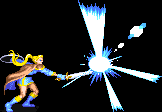

|
|
|
ELF |
 |
| |
여기서의 데미지는 상대적인 데미지를 뜻합니다.
이곳에 적은 콤보가 전부는 아니므로 자신만의 콤보를 개발하는 것도 좋습니다.
A공격 3타까지는 파이터처럼 빠르고 강공격과 슬래쉬는 클레릭처럼 빠르기 때문에 안정적이고 빠른 공격이
가능합니다. 그러나 기본 무기인 숏소드의 리치가 타클래스에 비해 많이 짧기 때문에 재빨리 접근해서
공격하는 것이 좋으며 대공기에 빈틈이 많기 때문에 콤보실수시 피해가 클 수 있으니 주의하는게 좋습니다.
강공격:→A 슬래쉬:↓↘→A 대공기:↓↑A |
| |
일반 공격을 할 경우 화면이 번쩍이면서 우측 그림과 같은 효과가 나올 때가 있습니다.
'크리티컬 데미지' 혹은 '맥시멈 데미지(줄여서 맥뎀)'가 나오는 상황인데
이경우 적이 바로 쓰러지니 콤보시도시 이점을 유의하시기 바랍니다. |
 |
|
| |
A → (A / 강공격) → 슬래쉬 → 대공기(혹은 대공기 2타 캔슬후 화살 5연사)
(데미지 : 최대 8 / 성공률 : 높음)
가장 기초적인 콤보로 대공기를 넣는 타이밍과 거리에 따라 섬머솔트 킥까지만 맞고 공중으로 붕 뜨는 경우도 있고
마지막 공격이 맞아서 땅에 바로 꽃히는 경우도 있으며 대공기 2타 이후의 공격이 아예 빗나가는 경우도 있으므로
경험을 통해 타이밍과 상황대처 능력을 익히는 것이 좋습니다.
특히 다크 워리어가 광분했을 때는 주의해야 합니다.
가용 보스 : 다크워리어, 하피, 텔아린, 오우거, 맨티코어, D.비스트
|
|
|
| |
점프 후 화살공격 → A → (A / 강공격) → 슬래쉬 → 대공기
(데미지 : 최대 8 / 성공률 : 보통)
다크 워리어 전용콤보로 시프의 점프슬링으로 시작하는 콤보처럼 투척아이템없이 다크 워리어를 잡을 때 쓸만한
콤보입니다. 투척아이템 대신 화살공격으로 가드를 푼 후 콤보를 넣는 형식인데 투척아이템과 주문이 다 떨어졌을
때에도 시도 해 볼만 합니다. 다만 광분했을 땐 콤보를 좀 더 빠르게 넣어야 하며 대공기가 빗나갈 가능성이 커집니다.
화살 공격후 다른 콤보를 시도 해 보는 것도 좋습니다.
가용 보스 : 다크 워리어
|
|
|
| |
다운공격 → AB → 아이스스톰(혹은 AB연사:선택사항) → 적당한 콤보 -> 이하 반복
(데미지 : ∞ / 성공률 : 보통)
A+B공격이 다운 공격으로 먹히는 보스에게 통하는 콤보입니다.
오우거의 경우 A+B공격 후 아이스 스톰 없이 바로 콤보를 넣기가 쉽지만 일정 HP이하로 내려가면 형(?)을 부르기
때문에 콤보를 계속해서 넣을 수 없으므로 HP상황에 따라 아이스 스톰의 사용여부를 재빨리 판단하는 것이 좋으며
비스트의 경우 A+B공격 후 바로 콤보를 넣고자 한다면 머리맡에서 A+B를 시전하는 것이 좋습니다.
(꼬리 부분에서 시도 한다면 거의 무조건 물립니다.)
그러나 주위에서 고블린들의 견제가 심하므로 안전하게 가고자 한다면 아이스 스톰을 시전하는 것이 좋습니다.
A+B공격이 HP를 소모하는 데다가 엘프의 HP는 적기 때문에 남발하는 것은 좋지 않습니다.
가용 보스 : 오우거, D.비스트
|
|
|
| |
※ 헤이스트 콤보
평상시엔 넘어지는 상황이라도 헤이스트의 빠른 속도를 이용해서 강제로 공격을 연결시키는 콤보입니다.
다만 헤이스트 시전후에 바로 아이템이 준비 되어 있어야 콤보를 넣기 쉽고, 헤이스트를 시전한 후의
움직임이 빨라서 컨트롤 하기가 조금 어려울 수 있으므로 연습이 필요한 콤보입니다.
그리고 손이 느린 유저라면 에뮬레이터의 연사기능을 사용하지 않는다면 구사하기가 상당히 힘들 수 있습니다.
A → A → A → 강공격 → 단검류 x 4 → 2회 반복 후 적당한 콤보
(데미지 : 10+@ / 성공률 : 낮음)
성공률은 낮은 편 이지만 하피,텔아린,맨티코어에게는 시도 해 볼만한 콤보입니다.
텔아린, 맨티코어는 단독으로 나오고 하피의 경우 콤보를 넣는 동안 셰도우 엘프가
우물쭈물 하는 경우가 많기 때문에 충분히 콤보를 넣을 수 있습니다.
다만 만티코어의 경우 바로 보스와 대면을 하므로 그 전 스테이지에서 준비를 해 놓는게 좋습니다.
가용 보스 : 하피, 텔아린, 만티코어, 오우거, D.비스트
|
|
|
| |
A → A → A → 강공격 → A → 대공기
(데미지 : 9.5 / 성공률 : 보통)
다크 워리어 전용 콤보로 투척무기로 가드를 푼 후 사용하는 것이 좋으며 보스와 대면 후 헤이스트를 시전하면
스켈레톤들이 바로 나오므로 그 전에 미리 시전해 둬야 합니다.
이 콤보를 시도하고자 한다면 이름을 타입G(건틀릿)로 정하는 것이 유리합니다.
가용 보스 : 다크 워리어
|
|
|
| |
A → A → A → 강공격 → 캔슬 화살 5연사 → 헤이스트 효과가 끝날 때까지 반복
(데미지 : ∞ / 성공률 : 보통)
단검이나 오일 같은 투척아이템을 아끼고 클리어 하고 싶다면(혹은 하나도 없는 경우) 사용 해 볼만한 콤보입니다.
화살 연사를 맞춘 후 바로 공격이 가능하지만 그럴 경우 텔아린이 무조건 쓰러지므로 자세를 회복 하는 타이밍을
맞춰서 공격을 해야 계속 해서 콤보를 넣을 수 있습니다. 그리고 너무 가까이 붙으면 중단베기에 맞을 수 있고
떨어져 있으면 텔아린이 쓰러지기 쉬우니 거리를 적당히 맞추는 것도 중요합니다.
나그파의 경우 텔아린과는 달리 쓰러지더라도 콤보가 이어지며 대신 A공격의 히트 수를 줄여야 합니다.
그러나 나그파에게는 화살의 데미지가 너무도 약하게 들어가고 또 콤보를 넣을만한 상황을 만들기가 어려워서
실용성은 없으며 퍼포먼스용 입니다.
가용 보스 : 텔아린, 나그파
|
|
|
| |
그 외에 일반 몬스터를 상대로 쓸만 한 콤보
대쉬공격 → 강공격 → 슬래쉬 → (약간의 시간차를 둔 후)대공기 → 이후 추가 콤보
타이밍이 제대로 맞는다면 대공기의 마지막 내려찍기가 맞지 않기 때문에 히트수가 초기화 됩니다.
따라서 일종의 무한 콤보가 가능한데 적들의 HP가 늘어나는 2인 이상 플레이 시 도움이 됩니다.
대쉬공격 → 강공격 → 슬래쉬 → 강공격 → 슬래쉬 → 대공기
(강공격 / 대쉬공격) → 슬래쉬 → (강공격 → 슬래쉬) x 3
|
|
| |
| go to Top |
| 2007 Crassus & legon. All rights reserved. |
| |
| |